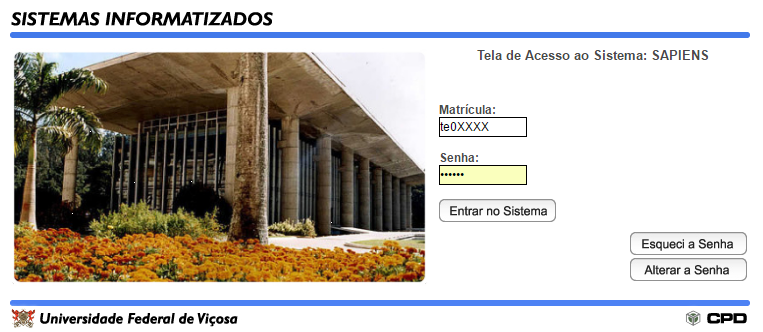
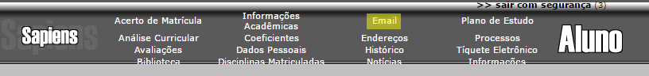
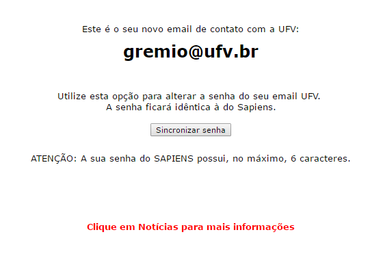

1. Acesse o Sapiens.
2. Faça login
3. Clique em E-mail:
4. Pronto, copie seu e-mail e prossiga com o cadastro
Dica: Clique em "Sincronizar senha" para que a senha do e-mail seja a mesma do Sapiens.
1. Acesse o Horde.
2. Insira seu E-mail e Senha e clique em Conectar.
Aos associados do GEDAM (Grêmio estudantil Diogo Alves de Melo), será garantido privilégios maiores, sendo possível a participação em sorteios que serão realizados nos eventos organizados pelo Grêmio, tais como: Luaus, Festa Junina, etc.
O GEDAM pretende formular parcerias com organizadores das festas universitárias realizadas em aspecto extra-institucional, podendo assim diminuir o valor de ingressos nestes eventos. Nesta parceria aluno/grêmio, o GEDAM pretende realizar sessões cinematográficas e envoltas ao lazer, com alguns bônus angariados nestes eventos que serão exclusivos aos sócios da organização. Não fique de fora, o associado só tem a ganhar nesta parceria!